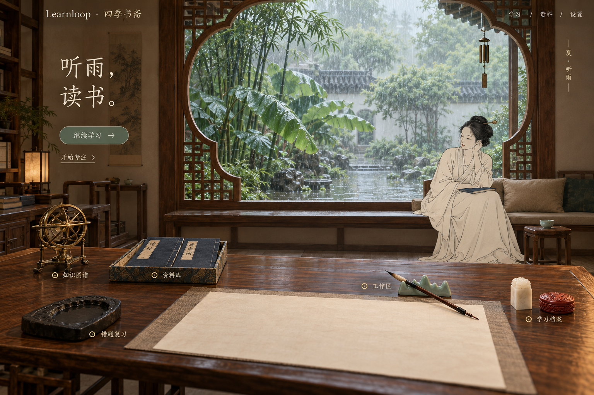

夏 · 听雨书斋
案几进入画面前景，女主自然落座窗边，雨庭形成空间纵深。器物是学习入口，人物融入室内。
一间书斋，两种停留方式。
常态从案头进入学习；专注时视线靠近窗边，保留计时与当前任务。秋夜用于比较同一空间的光色与人物姿态。
三张图由已配置的随想 Images API 生成。计时、文字和入口均为概念示例；当前展示静态图像，尚未实现镜头动画、粒子、声音或场景功能。变体参考同一夏日场景，仍需在制作 3D 资产时统一几何与人物比例。
前景案头、中景人物、远景四季。先看同一间书房在常态、专注和秋夜中的构图。

案几进入画面前景，女主自然落座窗边，雨庭形成空间纵深。器物是学习入口，人物融入室内。
常态从案头进入学习；专注时视线靠近窗边，保留计时与当前任务。秋夜用于比较同一空间的光色与人物姿态。
三张图由已配置的随想 Images API 生成。计时、文字和入口均为概念示例；当前展示静态图像，尚未实现镜头动画、粒子、声音或场景功能。变体参考同一夏日场景，仍需在制作 3D 资产时统一几何与人物比例。